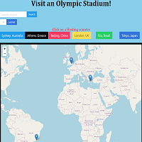
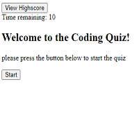

Hi, my name is Jason. I am a geographer interested in all things history, cooking, and technology.
My professional experience has involved GIS editing, annotation, and QA/QC testing within the utilities industry. I have also been involved in modeling and annotation for the real estate industry. On top of these experiences I have worked on multiple web applications. The following examples of my work will demonstrate my abilities in web development and web mapping. If you have any questions or want to reach out please find me through the contact links at the end of this page. Thanks!
This project utilized opensource GIS technologies including the leaflet web mapping API to create a interactive map highlighting sustainability projects on Central Washington Universities campus.
This project utilized Leaflet API and SkyScanner API to create a map that allows you to see past olympic stadiums and find flights to that location
This application will time the user as they attempt to answer a series of coding questions. save your high score and see how many questions you can answer
jasoncbradshaw97@gmail.com
(360) 742-6441
Linkedin